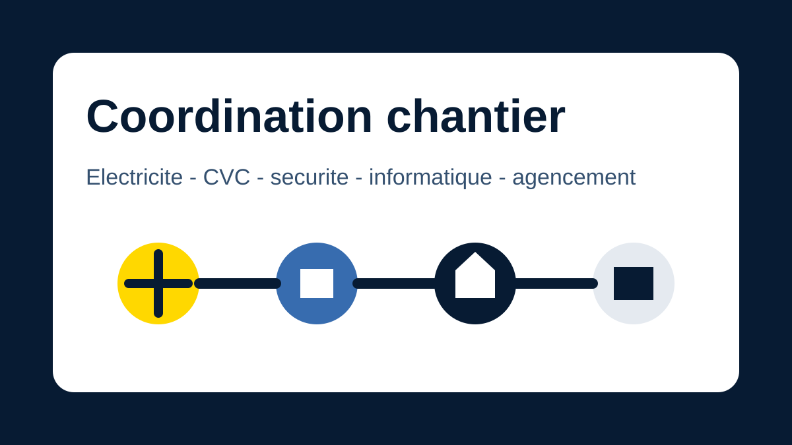
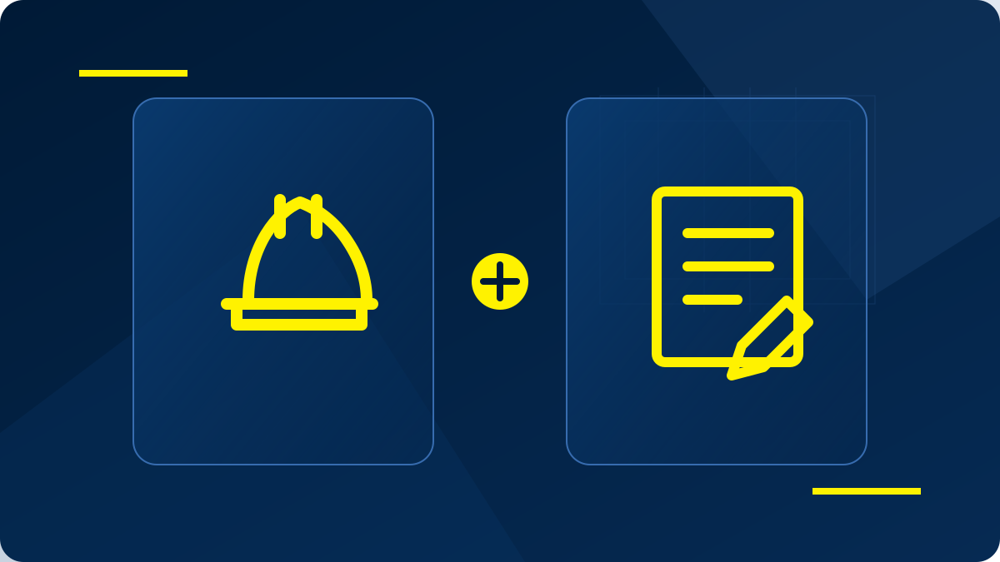

CFO ou CFA : quelle différence ?
Courant fort pour alimenter le bâtiment, courant faible pour connecter et sécuriser : SERILEC revient sur deux notions essentielles d’un projet électrique.
Lire l’articleSuivez les avancées de nos opérations, les temps forts de l’entreprise et les solutions techniques déployées par nos équipes.
Courant fort pour alimenter le bâtiment, courant faible pour connecter et sécuriser : SERILEC revient sur deux notions essentielles d’un projet électrique.
Lire l’article
La réussite d’un chantier repose aussi sur la coordination entre les équipes, les entreprises et les différents lots techniques.
Lire l’article
Éric Arasse rejoint l’équipe comme Chef d’équipe et Constantin Sinnesal évolue au poste de Conducteur de travaux.
Lire l’article